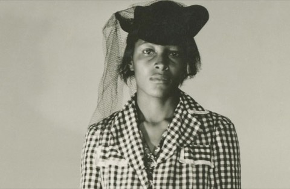

About the film
DC Premiere
Minneapolis: On the Record + A Special Screening
November 7, 2026
, 3:00 PM
MLK Jr. Memorial Library
FREE JOAN LITTLE tells the story of the 1975 groundbreaking case of Joan Little who was the first woman in U.S history to be acquitted for using deadly force to resist sexual assault. At 20 years old, Joan (pronounced Jo-Ann) Little was incarcerated in North Carolina when she killed a white jailer who she said tried to rape her. Her trial drew international attention, becoming a rallying point for civil rights, women’s rights and prison reform. The case brought together activists, including Angela Davis and Rosa Parks, and catalyzed an international conversation about sexual assault and racial justice that has reverberations to this day. With rare archival footage, contemporary interviews, and the folk anthem that carried her cause, FREE JOAN LITTLE captures the spirit of resistance that made history. The film features Oscar-nominated actress Danielle Brooks (The Color Purple) as the voice of Joan and is produced by Oscar-nominated filmmaker Christalyn Hampton (The Devil is Busy) and Bonnie Bertram, in association with Retro Report.
This short strand will be followed by a Q&A with producer Bonnie Bertram.
Screens with short films
They're Here
and
A Month in Minnesota
.
Yoruba Richen
Christalyn Hampton
Bonnie Bertram
RESERVE A FREE TICKET
At the festival
More films on these topics
- Short Strand: Minneapolis: On the Record + A Special ScreeningLaura Poitras, Rachel Lauren Mueller, Annie Sundberg2026
 Belly of the BeastErika Cohn2020 · 82 min
Belly of the BeastErika Cohn2020 · 82 min
The Rape of Recy TaylorNancy Buirski2017 · 91 min Crime & ParodyWill Thwaites2026 · 88 min
Crime & ParodyWill Thwaites2026 · 88 min A Month in MinnesotaAnnie Sundberg2026 · 40 min
A Month in MinnesotaAnnie Sundberg2026 · 40 min- An Unknown SubstanceSteven Leckart2026 · 39 min